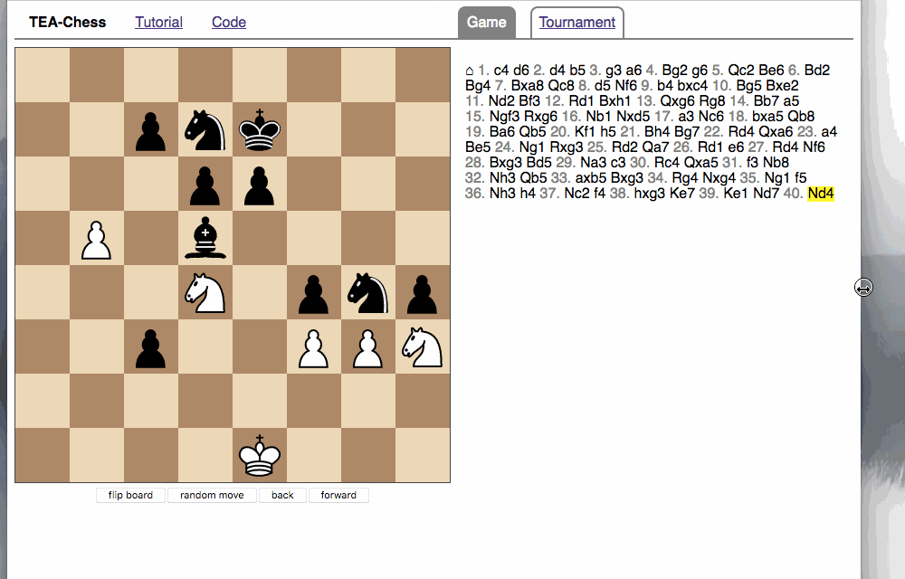

Twelve Days of Christmas #8
This is the eighth part of a chess-themed tutorial on writing an SPA in Bucklescript-TEA. After this part, your app will look similar to this demo.
Yesterday, we implemented the move list by using a functional
programming technique called the "zipper". Today, we will now add the
possibility to load chess games from the popular Lichess server, as well
as client-side routing. This will turn our program into what is
usually called a "single-page application" (SPA). Start from tag day7 if you are following along with my
repository.
Responsive CSS
First, let's account for the fact that users with different devices might use our app, and let's scale and arrange the content on the screen according to the size of the browser window. On a wide screen, it makes sense to have the move list and the board side by side, but on a narrow screen such as a phone in portrait format, the move list should be under the screen. Also the board should scale up and down according to the browser window size.
Let's first refactor the main view so we can assign styles easier:
let buttons_view = List.map (map board_msg) Board.buttons_view @ [ button [onClick Random_button] [text "random move"] ; button [onClick Back_button] [text "back"] ; button [onClick Fwd_button] [text "forward"] ] |> nav [id "buttons"] let header_nav_view = nav [class' "top"] [ ul [] [ li [class' "home"] [text "TEA-Chess"] ; li [] [ a [href "https://quernd.github.io/tutorials/tea-chess"] [text "Tutorial"] ] ; li [] [ a [href "https://github.com/quernd/tea-chess"] [text "Code"] ] ] ] let game_nav_view _model = let game_nav_item current link label = li [ if current then class' "current" else noProp ] [ if current then text label else a [href link] [text label] ] in nav [class' "top tabbed"] [ ul [] [ game_nav_item true "#/game" "Game" ; game_nav_item false "#/tournament" "Tournament" ] ] let view model = let game_status = Chess.game_status model.position in let interactable = match game_status with | Play move_list -> Board.Interactable (model.position.turn, move_list) | _ -> Board.Not_interactable in main [] [ section [id "board"] [ header_nav_view ; Board.view interactable model.position.ar model.board |> map board_msg ; buttons_view (* ; Board.result_view game_status *) ] ; section [id "game"] [ game_nav_view model ; section [class' "scroll"] [move_list_view model.ply model.moves] ] ]
I added two navigation elements. The game_nav_view will be a list
of tabs that will enable the user to switch between games later. Now
let's add some CSS to style the <nav> tags to look like tabs.
nav.top { text-align: left; border-bottom: .15em solid #808080; margin-bottom: .5em; overflow-x: scroll; } nav ul { margin-bottom: .5em; padding-left: 0; } nav ul li { display: inline; padding: .5em 1em .5em 1em; margin-right: .5em; margin-left: .5em; } nav.tabbed ul li { border: .15em solid #808080; border-bottom: 0; border-top-right-radius: .5em; border-top-left-radius: .5em; background-color: #f0f0f0; } nav.tabbed ul li.current { background-color: #808080; color: white; } li.home { font-weight: bold; }
To switch between a left/right and top/down layout of board and rest,
we use the flexbox model. We will have one main flexbox holding two
flex items (the board and the game view). The game view will expand,
while the board view is fixed in size. This happens automatically
because of the flex: auto; property of #game, which in turn is a
flexbox holding two elements, the <nav> bar and a scrollable area
that will hold the move list. The layout switch from left/right to
top/down happens through a media query that changes flex-direction
from row to column
when appropriate.
main { display: flex; height: 100%; flex-direction: row; } #board { text-align: center; } #game { overflow-y: hidden; flex: auto; display: flex; flex-direction: column; } #game > nav { flex: none; overflow-y: auto; white-space: nowrap; } .scroll { overflow-y: scroll; flex: auto; padding: .5em; } @media screen and (max-width:648px) and (min-height:480px) { main { flex-direction: column; } }
We also use CSS media queries to scale down the board and all its elements as the screen gets smaller:
@media screen and (max-width:832px) { cb-square { width: 48px; height: 48px; } cb-board { width: 384px; height: 384px; } cb-promo { width: 384px; height: 384px; } cb-promo cb-square { box-shadow: inset 0 0 20px 2.4px #808080; } cb-promo cb-square:hover { box-shadow: inset 0 0 38.4px 6.4px #d85000; } } @media screen and (max-width:740px) { cb-square { width: 36px; height: 36px; } cb-board { width: 288px; height: 288px; } cb-promo { width: 288px; height: 288px; } cb-promo cb-square { box-shadow: inset 0 0 15px 1.8px #808080; } cb-promo cb-square:hover { box-shadow: inset 0 0 28.8px 4.8px #d85000; } } @media screen and (max-height:740px) { cb-square { width: 36px; height: 36px; } cb-board { width: 288px; height: 288px; } cb-promo { width: 288px; height: 288px; } cb-promo cb-square { box-shadow: inset 0 0 15px 1.8px #808080; } cb-promo cb-square:hover { box-shadow: inset 0 0 28.8px 4.8px #d85000; } }
You should now have a layout that rearranges when the browser window shrinks and expands, like this:

Making AJAX requests
Let's get some AJAX action going by making a GET request to an API.
The awesome Lichess online chess server exposes a public API for all
sorts of requests. For instance, we can get a JSON record for the
titled player tournament that was hosted recently (won by World
Champion Magnus Carlsen) by accessing
https://lichess.org/api/tournament/GToVqkC9.